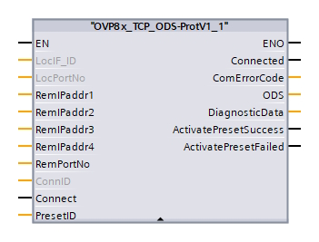

ODS PLC App setup Guide
O3R Hardware and Software requirements
Hardware requirements
Article |
Description |
|---|---|
OVP811 |
Latest VPU generation with pre-installed ODS license |
O3R222 (AB/AC/AD) |
|
O3R225 (AB/AC/AD) |
Use 1 Gigabit/s rated hardware: cables, switches only.
Software requirements
Software |
Version |
|---|---|
Firmware |
1.5.14 |
PLC Hardware and Software requirements
PLC Hardware requirements
The current function block is developed only for the following PLC’s.
Article |
Description |
|---|---|
SIEMENS S71500 |
S7CPU series (cycle time < 20 ms) |
PLC Software requirements
Software |
Version |
|---|---|
SIEMENS TIA Portal |
>= V16 |
State Machine overview
A state machine serves as an abstraction to accomplish the successful interface between ODS, PLC Applications and PLC.

Note
If there are any diagnostics raised during the configuration / operation state, please review the [diagnostic reaction strategy documentation](../SoftwareInterfaces/ifmDiagnostic/diagnostic_reaction_strategy.md) to resolve the issues.
Prerequisites
Extrinsic calibration of the cameras and VPU is a prerequisite for setting up an ODS application. Please refer to this document for extrinsic calibration routines.
Setup procedure
To setup PLC based AGV with O3R ODS (collision avoidance), follow these steps.
ODS application setup: creation and configuration
To create and configure the ODS application instance please refer to the ODS section.
Note
The PLC function block is only able to configure between already existing presets of the ODS application (via PLC application). Meaning, when a preset index load is requested from the PLC to the PLC application, the PLC application will internally load the given ODS preset. If preset index is not existing, then the system will throw a asynchronous diagnostic: invalid configuration.
Therefore, the presets of ODS application have to be configured prior to creating the PLC application.
To configure the presets of an ODS application, please refer to the presets documentation.
Example preset configurations for different driving scenarios can be found in driving scenarios document
PLC application setup: creation and configuration
In ifmVisionAssistant, create the PLC application from the applications in the Application window by clicking on the icon.
Configuration parameters
Parameter |
Description |
|---|---|
|
To configure the custom name for the application |
|
The current application state. Per default, the state is set to |
|
Identifier of the ODS app instance. (e.g. |
The PLC application is per default in RUN state. Therefore the ODS application shall be saved to be in RUN state at every bootup session.
Note
The PLC embedded application sends data over TCP/IP without waiting for acknowledgement. When an additional network load introduced by the user may result in network saturations i.e. communication delays.
PLC hardware setup: Network Topology
To estabilish a successful communication between PLC and VPU, both devices must be in same subnet range. Please refer to the Ethernet interfaces documentation for setting up the static IP address on VPU.
Note
- Please use only `ETH0` as a main communication interface between VPU and PLC.
- `ETH1` can be used for the debugging purposes via GUI / API.
- Ethernet ring topologies are not supported: `ETH0` and `ETH1` must not be in same subnet range.
SIEMENS Function Block
The SIEMENS function block provided by ifm is intended to provide a interface between PLC and PLC application on VPU. There are four functions included in the function block
Establishing a TCP connection to the PLC server of the VPU
Monitoring the connection to the PLC server
Receiving the ODS result data and displays at the outputs
Sending the zone sets to be activated

Activating a preset in the ODS The presets are stored in the ODS and labelled with an identifier. When the user inputs the identifier of the preset at the PresetIdx input parameter the Function Block will
- Sends the command to activate the specified zone set when the value of the PresetId input parameter is changed
- Sends the command to activate the specified zone set each time the connection to the PLC server of the VPU is established
- Repeats the command periodically if it was previously rejected by the PLC server
- Shows in the ActivePresetSuccess output = TRUE if the command was accepted by the PLC server of the VPU
- Shows in the ActivePresetFailed output = TRUE if the command was rejected by the PLC server of the VPU or a communication error occurred during transmission
Note
A positive acknowledgement of the command does not mean that the zone set is already active in the ODS. The configuration used to determine the zone assignment is always displayed in the ODS.ZoneConfigID output.
For more details of Function Block implementation and configuration see the Function Block PDF.